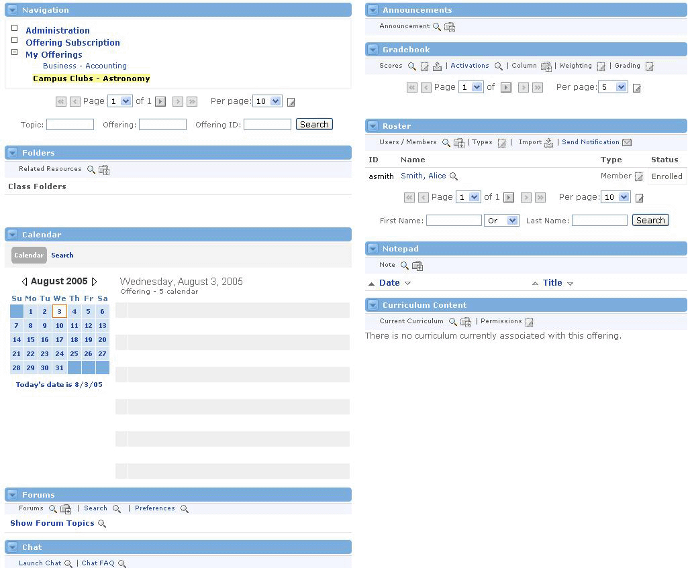

By now you may have noticed that all of the channels on the Groupware tab are contained within one large channel, the Groupware Channel. The Groupware channel acts as a dashboard for all of the content of a topic offering.

Restrictions
Because the Groupware channel surrounds all of the other channels within the Collaborative Groupware, these channels cannot be personalized like those outside the Collaborative Groupware. The Groupware channel defines these settings and holds the other channels to those settings for the sake of the overall functionality and feel of the learning environment.